Exploits Unmasked / Malware Analysis
PM Kisan Yojana Malware 2026
An active Android malware campaign impersonating an Indian government welfare scheme — static analysis, C2 and IOCs.
This is an ACTIVE MALWARE Analysis report of Malware called PM Kisan Yojana and on (date : 2026-09-13 ) of which my Father was victim off .
Synopsis !
DISCLAIMER: This disclosure is for defensive purposes only. To help defenders detect and block this malware. Do not use this information for unauthorized access or offensive purposes.
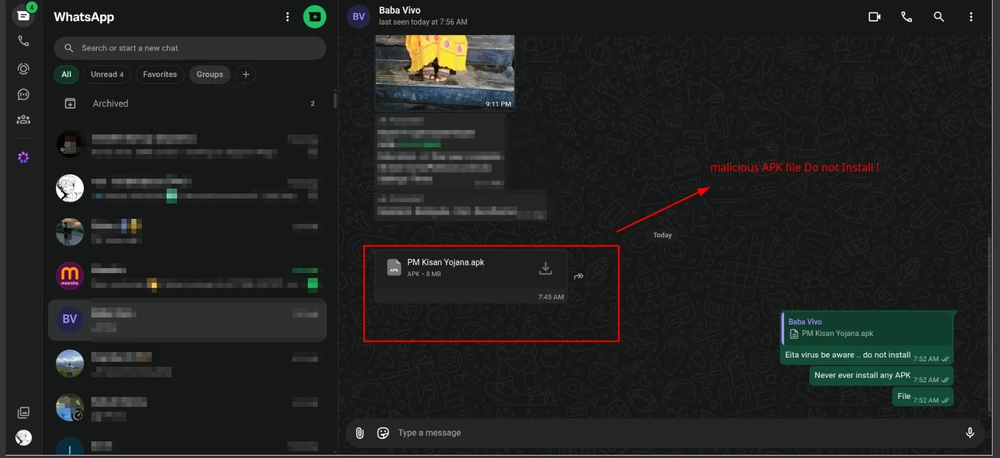
I was chiiling and Sipping my coffee in the morning then I get a whatsapp message from my father and It was an apk file called PM Kisan Yogana.apk and my heart skipped . I knew that my fathers phone was hacked before i could inform him it was already late attacker was instructing me to open the apk in hindi .
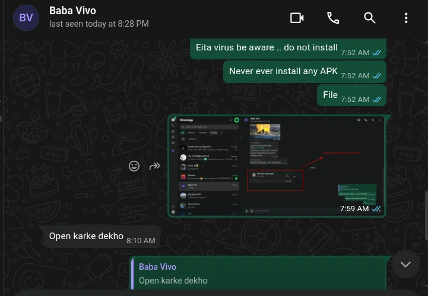
Not only My father, so many Innocent peoples are being targeted like this and their wallets and money are drained without their Knowledge.
In this write-up, I break down the reverse-engineering process of this malware sample, detailing how unpacking its hidden payloads helped uncover critical C2 infrastructure and attacker artifacts data that has been shared with law enforcement to assist in tracking down the threat actor.
Recon and Methodology
My task was to find anomalous IP addresses and phone numbers relaying information to the attacker
Well to achive that I need to :
Decompile the apk
Search for hard coded credentials or network indicators ( IP's, URL, Domains )
Look for Keys and Api's
Identify encrypted and obfuscated payloads
Look for any C2 Infrastructure
Phase 1: File Triage
First i downloaded the the apk inside a VM ( I used Parrot OS )
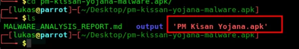
The apk file size was around 8.9 mb , I decided to take a look at the APK tool and perform static analysis for which I used Jadx-gui and mobsf .
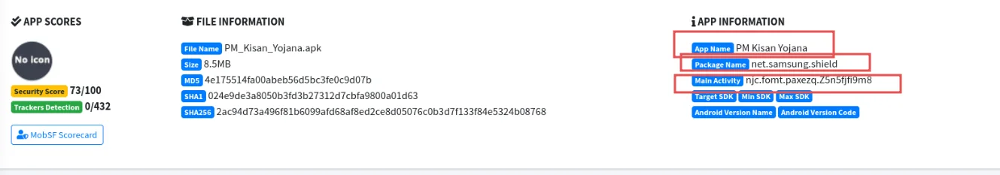
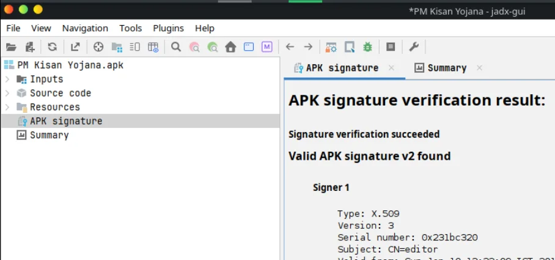
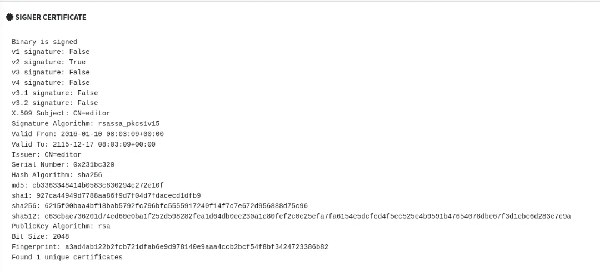
Major Red Flags Identified
The App name and package name is diffrent which i a great red flag ofcourse .
Generic / Self-Signed Subject & Issuer: Both the
SubjectandIssuerare set toCN=editor. Legitimate apps use recognized corporate developer names or certificates issued by verified Authorities.100-Year Validity Period: The validity spans from
2016-01-10to2115-12-17(99+ years). While default Android debug/test keystores often generate long-term certificates, production apps do not useCN=editorwith century-long validity.Default / Test Keystore Artifacts: The alias
editorcombined with standard Android RSA-2048 signing is characteristic of generic modified apps, re-signed APKs (such as modded games or patched utilities), or malware build frameworks.Threat Intelligence Matches: The SHA256 fingerprint (
6215f00baa4bf18bab5792fc796bfc5555917240f14f7c7e672d956888d75c96) appears in malware threat intelligence databases (e.g., MalwareBazaar) associated with samples such as Irata spyware / Trojan, as well as heavily repacked/modded APKs.
Signature Analysis
v2 Signature (APK Signature Scheme v2): Only
v2is present (True), whilev1,v3,v3.1, andv4areFalse. While Android supports v2-only signed binaries starting from Android 7.0+, running a single-scheme self-signed cert from an unknown source poses a high risk of tamper or repackaging.
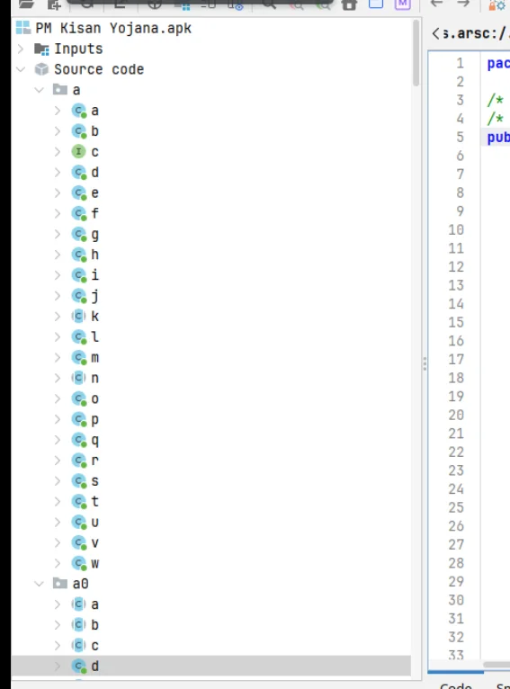
If you have done some pentesting or played or solve some android CTF's You know these are the signs of malicous APK but before checking the package I always try to read Summary and APK Signature because summary it give you the app name , package and a glance into SDK and APK signature Gives you the details of How the App was signed .
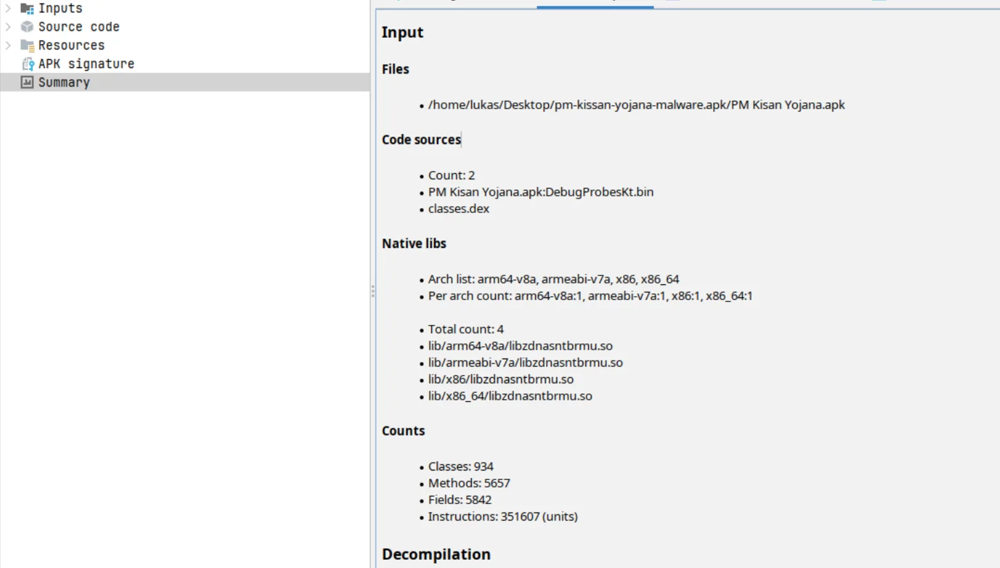
I tried to look into AndroidManifest.xml and String.xml and There was nothing there . Attacker really tried his best obuscate but after inscpecting I really did find lots of dex file and presence of native libraries (.so files ) which indicated heavy code or obuscation .
After navigating and looking to some clue in jadx i found
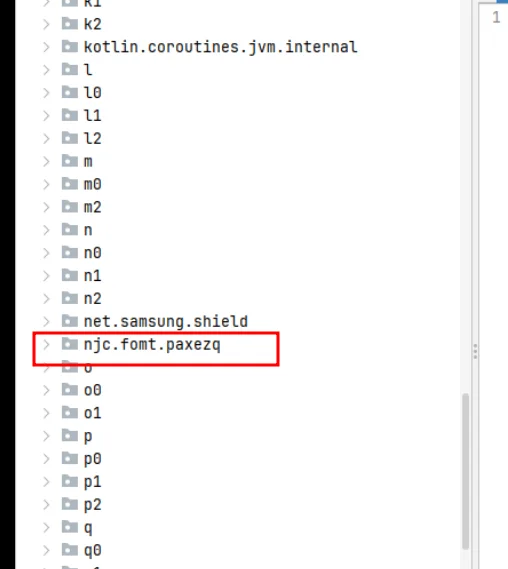
Upon further investigation I found suspicious areas that need to be dug deeper , the package name 'njc' and 'net.samsung.shield' and then I decompiled the apk output
Phase 2: Directory Structure
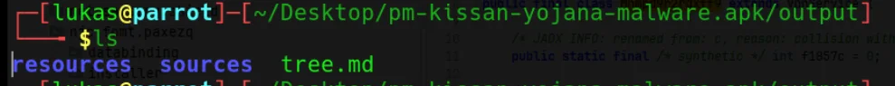
As the njc directory which seems to be a custom package, So i tried to look for hardcoded Strings with network indicators.
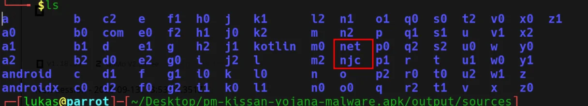
Interesting! The assets folder has some suspicious files with random-looking names. Let me look at those and the njc package, the README.txt, and the net/samsung directory. These assets look like they could contain encrypted/malicious data.
The output/ directory from jadx decompilation
output/
resources/
AndroidManifest.xml # Encrypted/obfuscated (only 1 line)
assets/ # Suspicious asset files
lib/ # Native libraries
res/ # Android resources
sources/
njc/fomt/paxezq/ # Custom malware package (obfuscated names)
com/google/android/ # Material Design library
net/samsung/shield/ # Fake Samsung package (impersonation)
[a-z][0-9]/ # R8/ProGuard obfuscated packagesThe package njc.fomt.paxezq uses randomly-generated names (which hints obfuscation), containing: installer/ApkInstallerManager.java (APK installer with native methods), vpn/Mnmpd9r2rqxff9.java (VPN service), ui/Syg5chty710.java (UI activity).
So i dug deeper into these custom packages and check for encrypted/base64 data, phone numbers, and also look at the raw/dat/bin files in assets which may contain the C2 configuration.
Phase 3: Binary Pattern Search hard coded credentials or network indicators ( IP's, URL, Domains )
Before diving deep, I did a quick sweep for common indicators.
What i looked for :
strings "PM Kisan Yojana.apk" | grep -E '\b[0-9]{1,3}\.[0-9]{1,3}\.[0-9]{1,3}\.[0-9]{1,3}\b'
# Search for phone numbers
strings "PM Kisan Yojana.apk" | grep -E '\b[0-9]{10}\b'
# Search for URLs
strings "PM Kisan Yojana.apk" | grep -iE 'https?://'What I found :
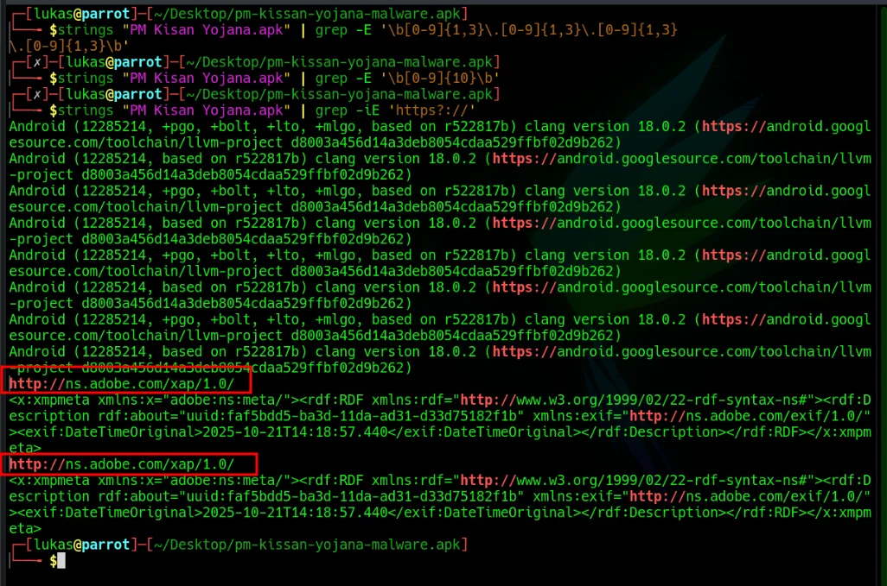
No hardcoded IPs or phone numbers found in the APK binary. This was the first major clue the malware doesn't hardcode its C2 endpoints but i did found a supicous http addr thats impersonating adobe.com but still nothing .
So, Now all these was Hinting something no hardcoded IPs. That means either: (a) the C2 is in the encrypted payload I haven't decrypted yet, or (b) it uses cloud services like Firebase/Telegram where the endpoints are built into SDKs, not hardcoded. Either way, I need to find and decrypt the hidden payload first.
Phase 4: Native Library Analysis
There was lot of native libraries .so files and dex files . After Decompling the APK as I have already new that there were so many native files so I went to analyse it .
What I Did :
# Find all .so files
find output/resources/lib -name "*.so"
# Extract all strings from the ARM64 library
strings output/resources/lib/arm64-v8a/libzdnasntbrmu.so | sort -u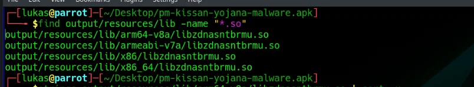
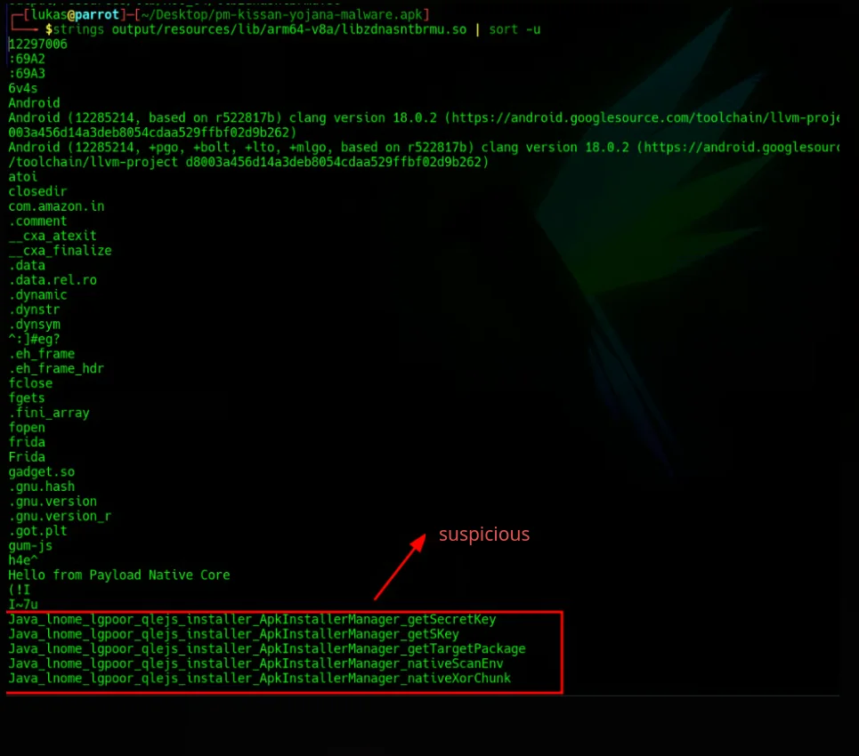
Now this was suspicous and this was something to look at and I did some google-fu
What I found :
JNI Function Names (original class names before obfuscation)
Java_lnome_lgpoor_qlejs_installer_ApkInstallerManager_getSecretKey
Java_lnome_lgpoor_qlejs_installer_ApkInstallerManager_getSKey
Java_lnome_lgpoor_qlejs_installer_ApkInstallerManager_getTargetPackage
Java_lnome_lgpoor_qlejs_installer_ApkInstallerManager_nativeScanEnv
Java_lnome_lgpoor_qlejs_installer_ApkInstallerManager_nativeXorChunkJNI function names include the original Java class name. The APK is R8-obfuscated, but the .so file preserves the original names. I now know
This was Gold :
Original package:
lnome_lgpoor_qlejs(now obfuscated tonjc.fomt.paxezq)The app has
getSecretKey,getSKey,getTargetPackagemethodsnativeScanEnvsuggests anti-analysis/detectionnativeXorChunksuggests XOR-based encryption/decryption
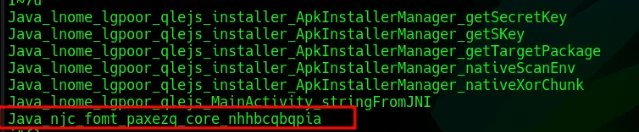
Hardcoded credentials
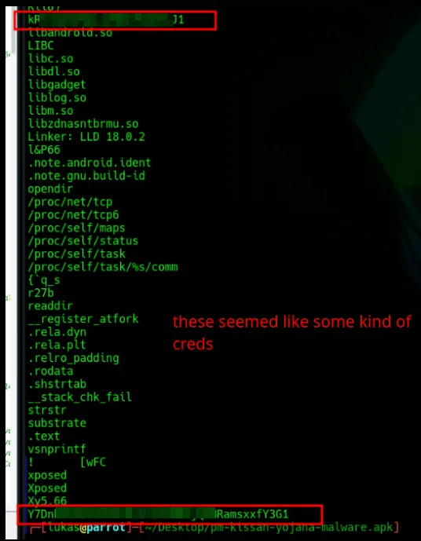
Anti-Analysis Detection Strings
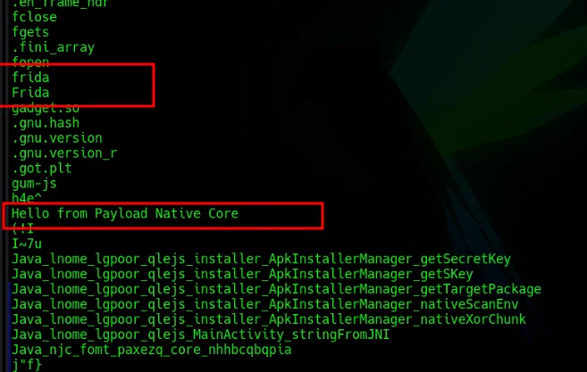
frida, Frida # Dynamic instrumentation framework
gadget.so # Frida's injectable library
libgadget # Frida library variant
gum-js # Frida's JavaScript engine
substrate # Cydia Substrate hooking framework
xposed, Xposed # Xposed FrameworkProcess inspection Paths
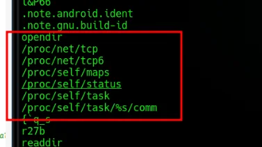
/proc/net/tcp # Network connections (detect proxy/debugging)
/proc/net/tcp6 # IPv6 connections
/proc/self/maps # Memory map (detect injected code)
/proc/self/status # Process status (detect debugger)
/proc/self/task # Thread infoNow after Finding all the hint . All I have to do was to connect the dots to get a picture of how actually this malware or APK works
Connecting Dots :
The native library is doing three things:
Providing crypto keys for decrypting hidden payloads,
Detecting if we're running under Frida/Xposed (which means it knows analysts will try to hook it)
Reading /proc to detect debugging.
This is a malware sample that actively fights back against analysis.
NOW I had Keys Which will come in handy .
Phase 5: Asset Discovery
Now I knew the .so had XOR keys. The next logical question was: what are those keys used to decrypt?
What I Did :
I looked into the assets Directory to look for something Juicy !
ls -la output/resources/assets/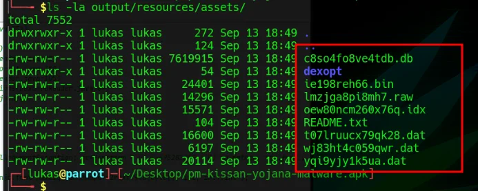
What I Found :
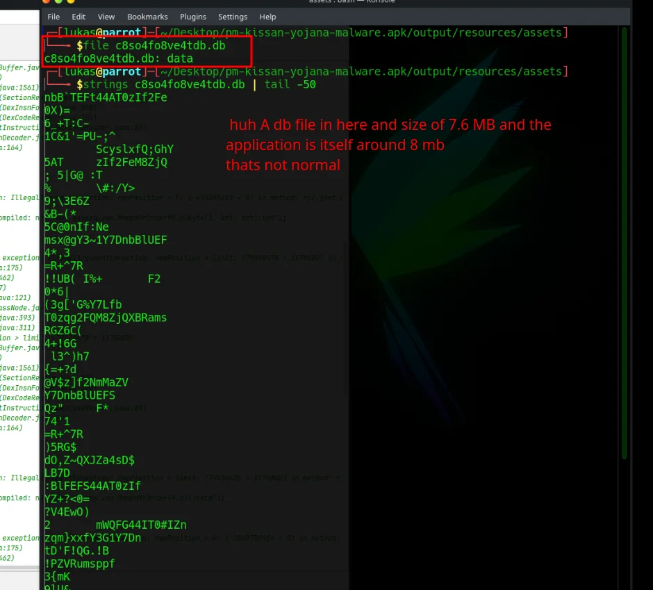
and when the file is heavily obuscated and data as no recognized format . The attacker used the .db extension is probably to make faster eyeballer analyst or researcher to skip it .
Phase 6: Decryption
As I knew the .db file as already suspicious Then I went straight to look what can i get out of it as i had the hard coded keys .
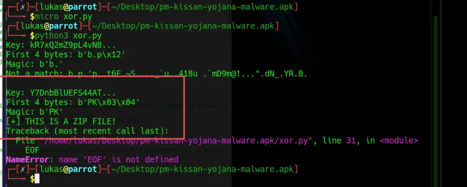
#/usr/bin/python3 << 'EOF'
keys = [
b'kR7x[Redaacted]wT6yB3sJ1', # Key from .so (shorter)
b'Y7DnbB[Redacted]sxxfY3G1', # Key from .so (longer)
]
with open('output/resources/assets/c8so4fo8ve4tdb.db', 'rb') as f:
data = f.read()
# Try each key
for key in keys:
decrypted = bytes([data[i] ^ key[i % len(key)] for i in range(len(data))])
# Check file signature
print(f"Key: {key.decode()[:15]}...")
print(f"First 4 bytes: {decrypted[:4]}")
print(f"Magic: {decrypted[:2]}")
if decrypted[:2] == b'PK':
print("[+] THIS IS A ZIP FILE!")
with open('/tmp/decrypted_payload.zip', 'wb') as f:
f.write(decrypted)
break
elif decrypted[:4] == b'dex\n':
print("[+] THIS IS A DEX FILE!")
break
else:
printable = ''.join(chr(b) if 32 <= b < 127 else '.' for b in decrypted[:50])
print(f"Not a match: {printable}")
print()
EOF
and the key came handy the second Key 'Y7Dn[Redacted]BRamsxxfY3G1' successfully decrypted the 7.6 mb file into a valid zip archive
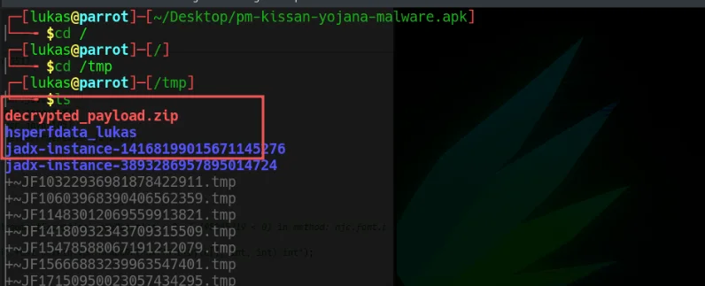
and there we go , the attacker was so blunt he didn't even tried to obuscate the naming scheme , well unziping files gave all these files
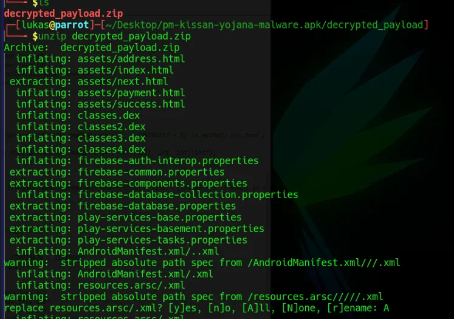
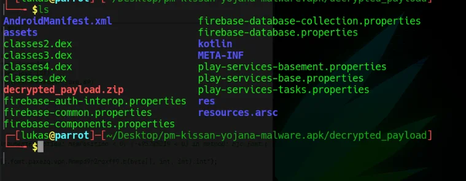
Why XOR script worked :
I did some Google Fuu and came to knew that JNI function was literally called nativeXorChunk. The .so file has an XOR decryption function, and it has XOR keys. The connection was obvious once I read the JNI names. This is why native library analysis is critical it tells you exactly how the encryption works .
Phase 7: Hidden DEX File Analysis
After extracting the decrypted ZIP, I found the real malware payload.
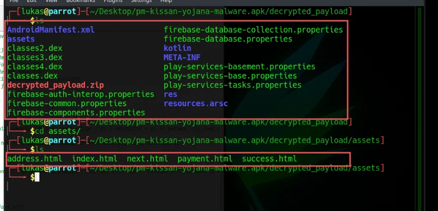
What Was Inside :
assets/address.html # Amazon India phishing - address collection
assets/index.html # Amazon India phishing - fake store
assets/payment.html # Amazon India phishing - UPI payment
assets/success.html # Fake order confirmation
classes.dex # Hidden malware DEX (stage 2)
classes2.dex # Supporting DEX
classes3.dex # Supporting DEX
classes4.dex # Primary malware codeThe "FAAH 🗣️" moment :
Four hidden DEX files AND an Amazon phishing kit. This is a serious malware. The classes4.dex is likely the main one usually the last DEX in a multi-DEX APK contains the primary app logic
What I Did:
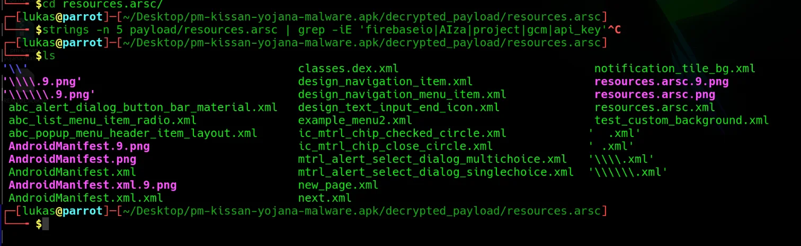
# Primary malware DEX - extract all strings
strings classes4.dex | head -100
# Search for network indicators
strings classes4.dex | grep -iE 'firebase|telegram|bot|token|sms|phone|send|forward|command|server|host|url'
# Extract Firebase config from payload resources
strings -n 5 resources.arsc | grep -iE 'firebaseio|AIza|project|gcm|api_key'I also used MobSf to get a better analysis !
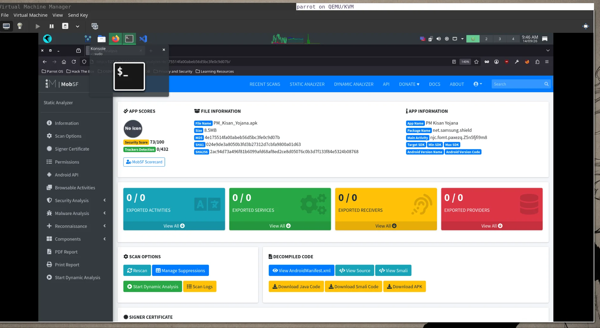
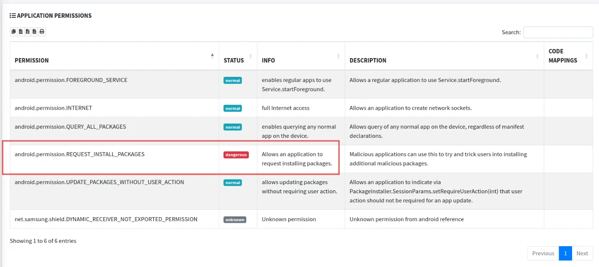
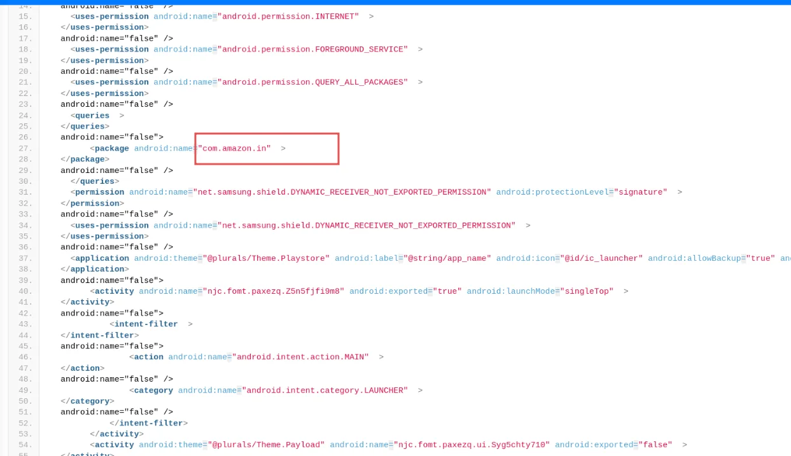
The "com/amazon/in" package name is deliberate impersonation. By naming malware classes after Amazon India, the attacker is trying to blend in with legitimate-looking stack traces and make the malware harder to identify in log files.
found SMS Interception Classes
com/amazon/in/SmsForwardingService # Forwards SMS to Telegram
com/amazon/in/SMSWorker # Background SMS processing
com/amazon/in/SmsReceiver # Intercepts incoming SMS
com/amazon/in/CommandService # Listens for C2 commands
com/amazon/in/SimInfoUploader # Exfiltrates SIM information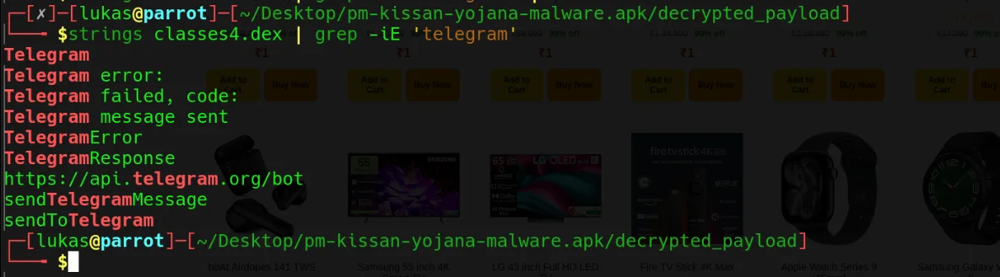
Even telegram bot was used for exfiltration .
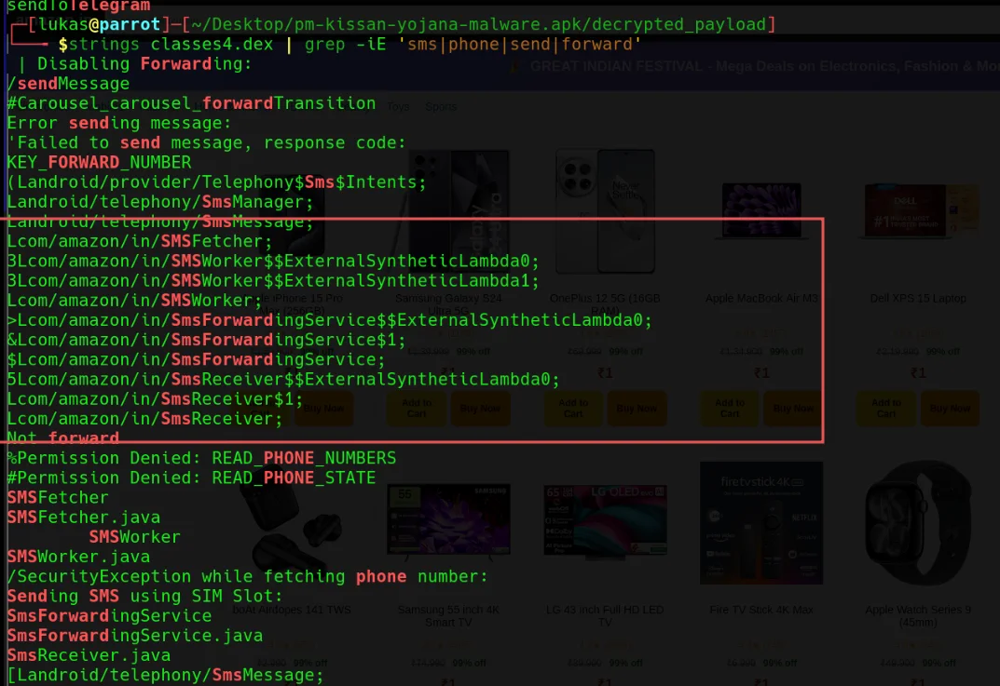
The Firebase C2 was found:
// Some code 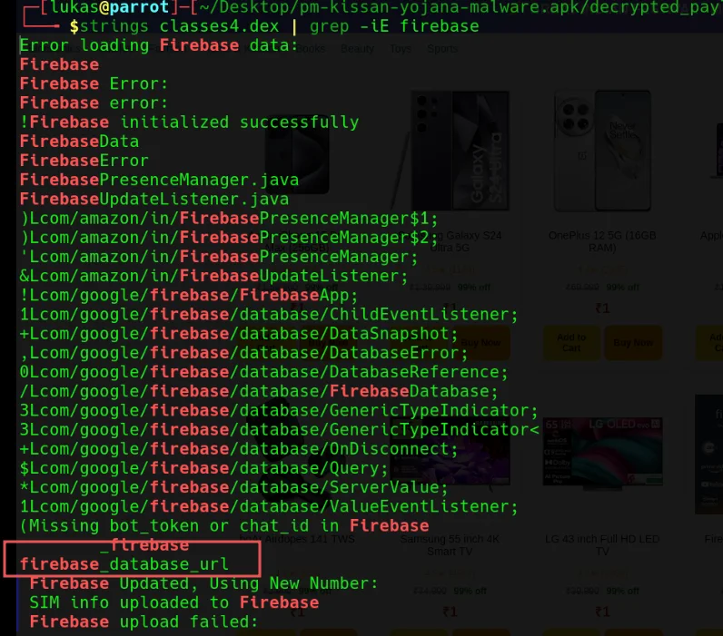
While I extracted the zip file of the payload.zip file i wasn't able to get the firebase creds or any kind of firebase info . which I was trying to get , so i used some google-fuu/AI-fuu and came to know firebase Android SDK stores its config (API key, project ID, database URL, storage bucket) in the app's google-services.json, which gets compiled into resources.arsc at build time. This is the only place Firebase config can live in a compiled APK, it's not in the DEX code, it's in the compiled resources binary.
Then I ran
strings -n 5 resources.arsc | grep -iE 'firebaseio|AIza|project|gcm|api_key'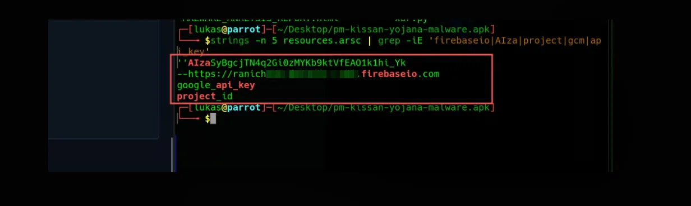
And got the API key and Firebase name !
What I Found:
Telegram Bot Endpoint
https://api.telegram.org/bot
<token retrieved from Firebase>The malware sends stolen SMS to a Telegram bot. The bot token is NOT hardcoded it's fetched from Firebase at runtime.
Firebase C2
ranichod1-default-rtdb.firebaseio.com
AIzaSyB[REDACTED]O1k1hi_YkThe Firebase project "ranichod1" serves as the command & control server.
Phase 8: Firebase C2 Analysis
How the C2 Works
Firebase Realtime Database is used as a two-way communication channel:
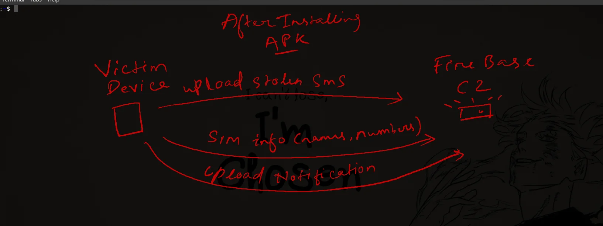
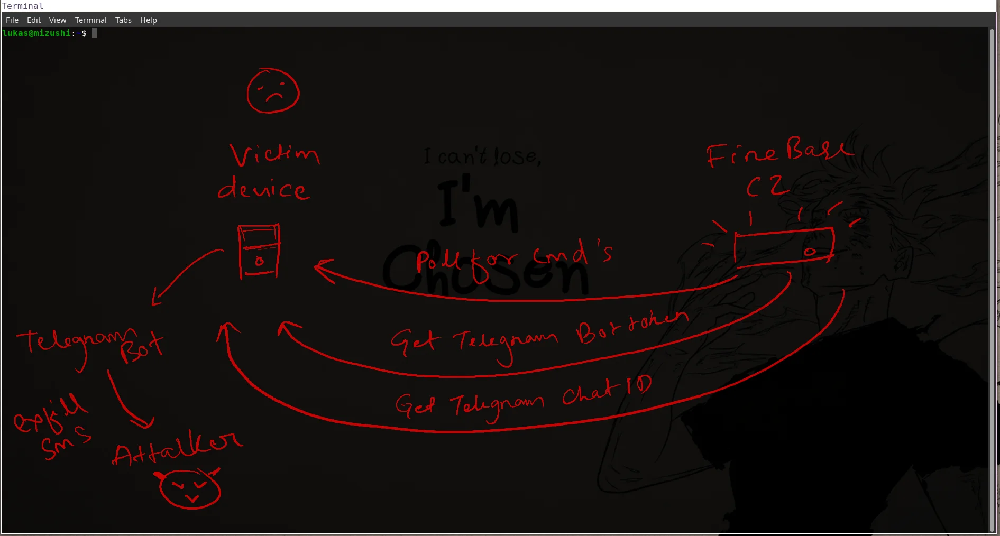
Why Attacker Used Firebase
Firebase is Insidious. Firebase is a legitimate Google service. The traffic looks like normal app traffic to Google's servers. There's no suspicious domain to block, no IP to blacklist (without blocking Firebase itself). The attacker gets a full real-time database, authentication, and storage all for free. This is why cloud C2 has become so popular in modern malware.
Phase 9: Telegram Exfiltration
How SMS Theft Works
1. SmsReceiver intercepts incoming SMS (Android broadcast)
|
2. SmsForwardingService processes the SMS content
|
3. Gets bot token from Firebase (fetched at startup)
|
4. Sends HTTP POST to https://api.telegram.org/bot<token>/sendMessage
|
5. Message includes:
- Sender phone number
- SMS body (contains OTPs, bank alerts, etc.)
- Timestamp
- SIM slot infoWhat made it Harder .
The bot token is NOT hardcoded. It's retrieved from Firebase at runtime. This means:
Static analysis alone cannot find the Telegram bot token
The attacker can rotate tokens without updating the malware
Each victim may get a different bot token (attacker can use separate bots per victim)
Phase 10: Phishing Kit Analysis
Attacker is trying to Mimic Amazon page and using a phising Kit
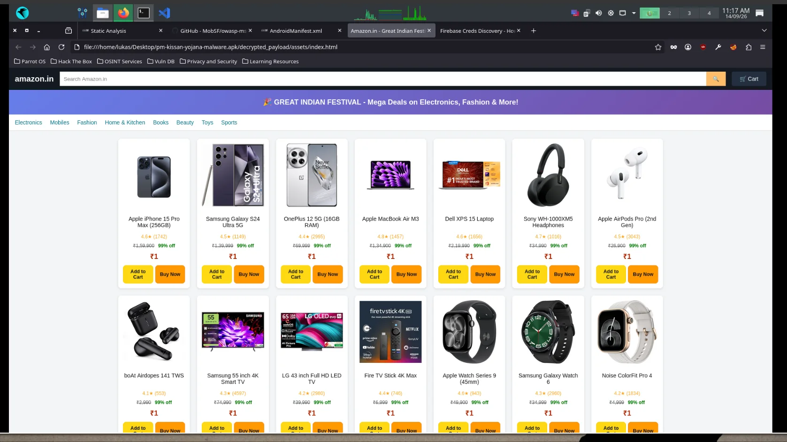
What the Phishing Kit Does
The decrypted payload contained a complete Amazon India phishing kit in HTML format:
index.html
Fake Amazon store ("Great Indian Festival")
Browsing behavior
address.html
Address collection form
Name, Mobile, Pincode, Address, City, State
payment.html
UPI payment form
Payment method selection, UPI ID
success.html
Fake order confirmation
Order ID: #AMZ-1RUP-2025
Products priced at ₹1: All items in the fake store cost 1 rupee classic bait to get victims to complete the checkout flow and enter personal/payment information.
Complete Analysis Flow
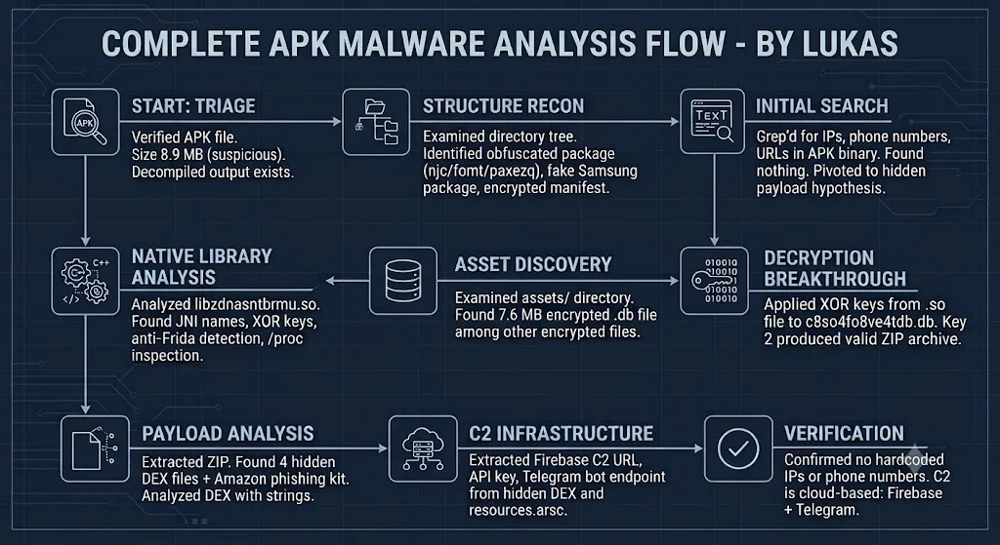
SHA256 of the APK , Report this.
2ac94d73a496f81b6099afd68af8ed2ce8d05076c0b3d7f133f84e5324b08768Please Share this report to help other defenders detect this malware.
Malware Analysis: PM Kisan Yojana Malware - Lukas